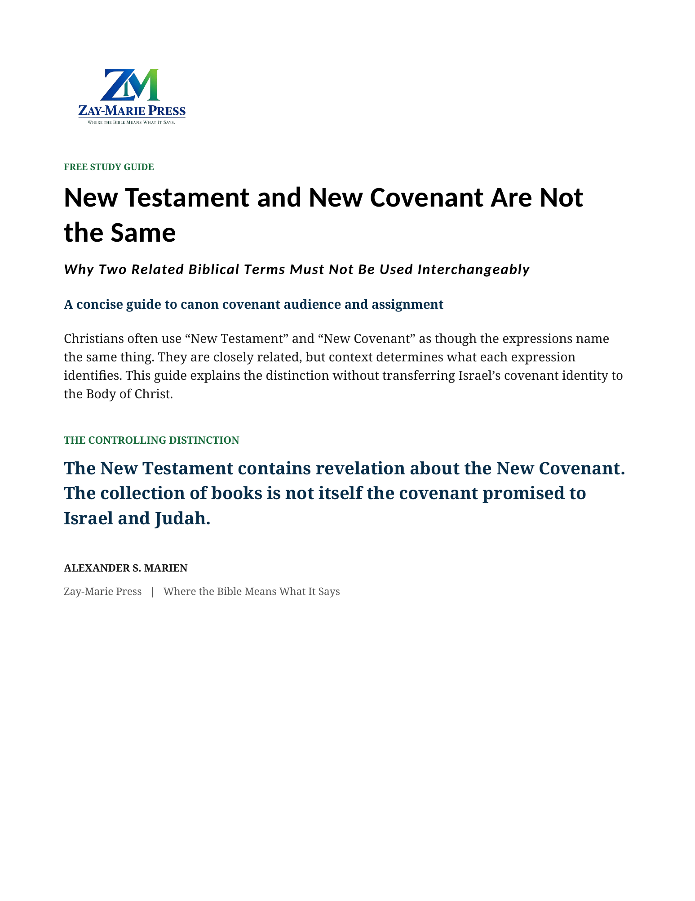
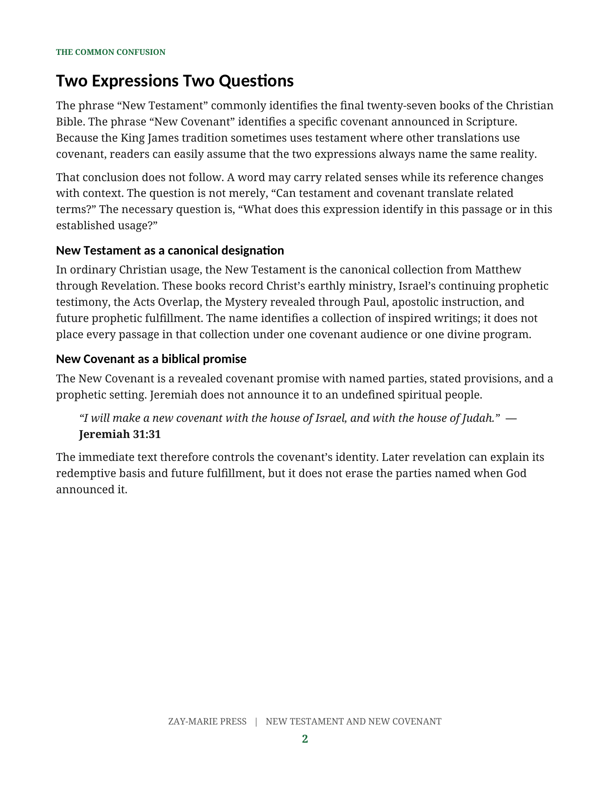
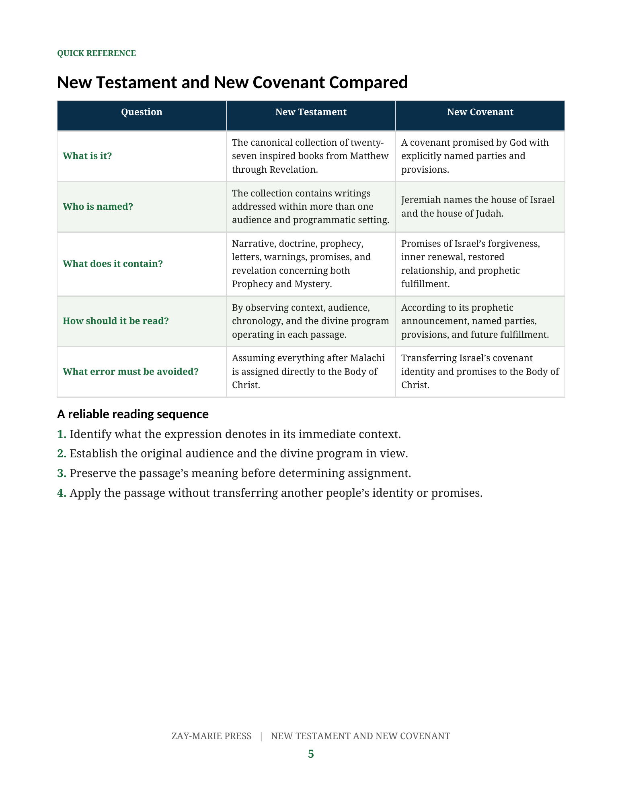

{kind=link}
Defines the Terms
Explains the established canonical use of New Testament and the biblical identity of the New Covenant.

Click cover to enlarge
Why Two Related Biblical Terms Must Not Be Used Interchangeably
Correct a common terminology error by distinguishing the New Testament collection from the New Covenant promised to Israel and Judah—without transferring Israel’s covenant identity to the Body of Christ.
Read or Download the PDFThe twenty-seven New Testament books contain revelation about the New Covenant, but the collection is not itself the covenant. Readers must still identify each passage’s audience, setting, and divine program before determining assignment and application.
Explains the established canonical use of New Testament and the biblical identity of the New Covenant.
Keeps Israel and Judah as the covenant’s explicitly named parties in Jeremiah 31.
Maintains the distinction between Israel’s Prophecy Program and the Body’s Mystery Program revealed through Paul.

See why related vocabulary does not make a canonical collection identical to a promised covenant.

Compare identity, audience, contents, reading controls, and the interpretive errors that must be avoided.
This free guide corrects the terminology. The New Covenant develops the doctrine through covenant history, Jeremiah 31, Ezekiel 36, Christ’s finished work, Romans 11, the Acts Overlap, Israel’s future restoration, and the distinction between covenant identity and the Body’s Mystery blessings.
Explore The New Covenant{kind=link}
{kind=link}